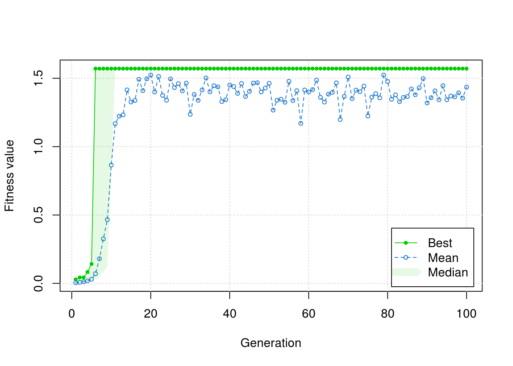

If a finite number of monkeys can write Shakespeare in infinite time, then an infinite number of monkeys can probably write Shakespeare in finite time. But can a finite number of monkeys write Shakespeare in finite time?
Tentatively, yes. See, randomness solves problems. How? You guessed it: with enough guesses, you can guess anything right. Trying every possible solution is a well known approach to finding the correct solution (take bogosort for example). But guessing takes time and since we never seem to have enough of that, we usually want the right answer right away. The problem is that solving a problem is hard when you do not know much about the problem you are trying to solve. So what happens when you do not know how to implement the optimal solution, but to try every solution would take too long?
Nature has discovered its own powerful optimization algorithm that successfully balances trial-and-error with speed: the process of evolution by natural selection. If you can conceive of genes as an attempted “solution” to the “problem” of survival until reproduction, then every organism is a guess as to the answer for life.
From this perspective, genomes that lead to reproduction represent solutions that work well. Likewise, genomes that lead to reproductive offspring represent solutions that work even better. Meanwhile, the best solutions would lead to perpetual reproduction. It would seem then that the Archae, microscopic organisms with genomes that have remained nearly constant for billions of years, represent a nearly perfect solution to life up until now.
Genetic algorithms borrow from nature to provide a framework for solving problems through evolutionary discovery. In simple terms, these algorithms offer a construct for iteratively testing the quality of randomly generated solutions, whereby each subsequent generation of solutions derive partially from the best performing solutions of the previous generation. It achieves this by simultaneously exploiting two core principals of natural evolution: (1) mutation and (2) sexual reproduction.
When an organism reproduces, the offspring incurs random mutations to their inherited genome. Then, through the process of evolution by natural selection, the fittest of these mutations get passed along to the next generation, allowing the most successful prior “solutions” to seed the next solution set. Some organisms have an additional layer of randomization: recombination. During this stage of reproduction (colloquially known as sex), the genomes of two parent organisms recombine with one another through a process called crossing over. Specifically, the genes of one (presumably successful) parent intermingles with the genes of another (presumably successful) parent, allowing an opportunity for the best (or the worst) traits from each parent to join together.
(Note that on an individual basis, crossing-over does not guarantee more successful offspring. However, it appears to have some kind of longitudinal benefit as evidenced by the sheer number of complex organisms that engage in sexual reproduction. In fact, some hermaphroditic organisms, notably flowering plants, will even cross-over with themselves in what is called autogamy.)
Of course, genetic algorithms cannot capture the total complexity of biological systems. As such, digital genes differ somewhat from their biological counterpart. First, unlike biological genes, which store information as As, Gs, Ts, and Cs, digital genes store bits of information as 1s and 0s. Second, unlike biological genes which can grow and shrink from insertions and deletions, digital genes have a fixed size. Third, unlike biological genes which have layers upon layers of higher-order regulation, digital genes have only the simplest expression profiles.
On the other hand, like biological genes, digital genes require a key that translates the gene transcripts (comprised of evenly spaced “codons”) into a functional sequence (comprised of protein-like “building blocks”). This key, analogous to the DNA codon table, is a user-defined function that ultimately tells the genetic algorithm how to make sense of (pseudo-)random binary strings.
To demonstrate a basic “codon table”, I introduce a function below that translates a binary sequence (analogous to a genetic codon) into a decimal sequence (analogous to an amino acid). Amino acids, the “building blocks” of the cell, conventionally represent the functional level upon which natural selection works. Then, just as amino acids undergo the test of life to determine the fitness of that organism, these translated decimal sequences will undergo their own test to determine their “fitness” as a solution.
table <- function(codon){
strtoi(codon, base = 2)
}In nature, each codon consists of three bases which exist in one of four states. Since we can represent four states using two bits, each natural codon contains \(3(2)\) bits of information. We will follow this convention for now by using 6-bit digital codons, allowing for \(2^6\) values per codon. An example of a digital gene with two 6-bit codons might look like this:
twoCodons <- c(1, 0, 1, 0, 0, 1, 0, 0, 1, 0, 1, 0)Above, I introduced a function that translates a single digital codon into a decimal sequence. However, in order to perform real work, we need to harness the power of multiple codons by translating an entire digital genome. Within the cell, the ribosome organelle holds the machinery that translates genes into functional proteins. To reinforce analogy, we will embed our custom “codon table” within a digital ribosome.
ribosome <- function(string, nbits = 6, how = table){
if(!is.character(string)){
string <- paste0(string, collapse = "")
}
if(nchar(string) %% nbits != 0){
stop("Digital gene not evenly divisible by chosen codon size.")
}
output <- vector("list", nchar(string)/nbits)
for(i in 0:(nchar(string)/nbits - 1)){
codon <- substr(string, i*nbits + 1, i*nbits + nbits)
output[[i+1]] <- do.call(how, list(codon))
}
return(output)
}Then, by feeding the mock digital gene through this digital ribosome, we can convert a series of evenly spaced binary strings into their corresponding decimal values.
ribosome(twoCodons)## [[1]]
## [1] 41
##
## [[2]]
## [1] 10Now, we need to put the translated gene to the test. For this, we define a fitness function that will score the “fitness” of a digital genome. In this paradigm, I find it helpful to think of “fitness” as a measure of the proximity of an outcome to an intended result. By convention, the fitness function will convert a binary vector input into a survival score, such that higher scores signify greater fitness. Then, through simulated evolution, the more fit solutions (i.e., those with higher scores) will have an increased probability of seeding the next generation of solutions.
In the example below, we define a fitness function that solves the simple equation \(a^2+b=308\). Since the fitness function expects binary vector input, we embed our digital ribosome within the fitness function itself. Then, based on our choice of genome size and ribosome configuration, the genetic algorithm will attempt solutions for \(0<a<65\) and \(0<b<65\).
(Note that if we wanted to change the range of values for \(a\) or \(b\), we just need to change the “codon table” function. If we wanted to add more possible values for \(a\) or \(b\), we just need to increase the size of the codon. If we wanted to add more variables, we just need to increase the size of the genome. In this way, we have a tremendous amount of control over the kinds of solutions tested. Meanwhile, through careful crafting of the fitness function, we maintain total control over how the solutions get tested.)
fitness <- function(binary){
AA <- ribosome(binary, nbits = 6, how = table)
solution <- AA[[1]]^2 + AA[[2]]
atan(1 / abs(308 - solution))
}In order to execute the algorithm, we need to provide two additional parameters. The first, nBits, equals the total length of the digital genome expected by the digital ribosome and fitness function. The second, maxiter, equals the total number of generations (i.e., reproductive cycles) until the algorithm terminates. Running an algorithm with fewer iterations will finish sooner, but will carry an increased risk of not converging onto a “best” solution.
library(GA)
set.seed(1)
res <- ga(type = "binary", fitness = fitness, nBits = 2*3*2, maxiter = 100)plot(res)
solution <- summary(res)$solution
ribosome(solution)## [[1]]
## [1] 17
##
## [[2]]
## [1] 19This mock example highlights how the same genetic algorithm, when executed twice, may arrive at different solutions each time. By starting with a different genetic stock (i.e., a different primordial Eve), or by drifting through a different genetic path, a genetic algorithm may converge on a different “best” solution.
set.seed(2)
res <- ga(type = "binary", fitness = fitness, nBits = 2*3*2, maxiter = 100)
ribosome(summary(res)$solution)Since we can represent nearly any type of input as a binary string, genetic algorithms offer a tremendous amount of flexibility when solving problems. Next, we will use genetic algorithms to draft a line from Shakespeare. By constructing a fitness function that rewards digital genes that most closely approximate Shakespearean verse, we guide an otherwise chaotic process toward coherency. Then, just like the proverbial monkey striking away on a typewriter, we author something poetically sensible out of nothing more than fragments of nonsense.
First, however, we need a new “codon table” that translates binary strings to alphanumeric characters. To do this, we will convert binary to decimal, then decimal to raw, and finally raw to character.
table <- function(codon){
dec <- strtoi(codon, base = 2)
rawToChar(as.raw(dec))
}By using this new “codon table” in conjunction with the digital ribosome from above, we can convert a digital genome into a literary paragraph. However, in order to ensure that each codon could eventually become any letter, we need these codons to contain 7-bits of information each.
Next, we need a way to evaluate the fitness, or literary quality, of the translated binary strings. In theory, an experienced user could incorporate some kind of natural language processing to guide the algorithm toward novel speech. However, in this contrived example, we will simply excerpt a quote from Shakespeare against which we compare each piece of translated text. As such, our fitness function will measure the similarity between Shakespeare and random nonsense. Then, by iteratively breeding the most sensible nonsense, we can eventually arrive at some prosaic truth.
prose <- "that which we call a rose by any other name would smell as sweet"fitness <- function(binary){
AA <- ribosome(binary, nbits = 7, how = table)
sum(unlist(AA) == unlist(strsplit(prose, "")))
}In order to execute the algorithm, we again need to supply arguments for the nBits and maxiter parameters. Since we need 7-bits to represent each letter in the final result, we set nBits equal to nchar(prose)*7. Next, we set maxiter to 100,000 generations, a value which led to promising results during prior testing.
set.seed(1)
res <- ga(type = "binary", fitness = fitness, nBits = nchar(prose)*7, maxiter = 100000)Sometimes, the genetic algorithms result object contains multiple equally fit solutions. In these cases, I usually collapse all “best” solutions into an “average best” solution.
allsol <- summary(res)$solution
if(nrow(allsol) > 1){
final <- round(colSums(allsol) / nrow(allsol))
}else{
final <- allsol[1, ]
}Now, we can join the “best” characters together to draft the final sentence.
paste(ribosome(final, nbits = 7), collapse = "")## [1] "that which we call a rose by any other name would smell as sweet"Finally, I should remind the reader that the monkey-on-typewriter proverb does not accurately portray the simian creative process. Monkeys do not operate as random text generators, but rather have their own hopes, dreams, goals, desires, and even their own aesthetic. In fact, researchers have put monkeys to the test, providing them with typewriters, food, and time (the raw materials of fiction), and then waited for Hamlet to happen. However, as noted by a prestigious journalist, “after a month, the Sulawesi crested macaques had only succeeded in partially destroying the machine, using it as a lavatory, and mostly typing the letter s,” which is about all I can muster together myself most months.
© 2018 | thom@tpq.me | Twitter | GitHub